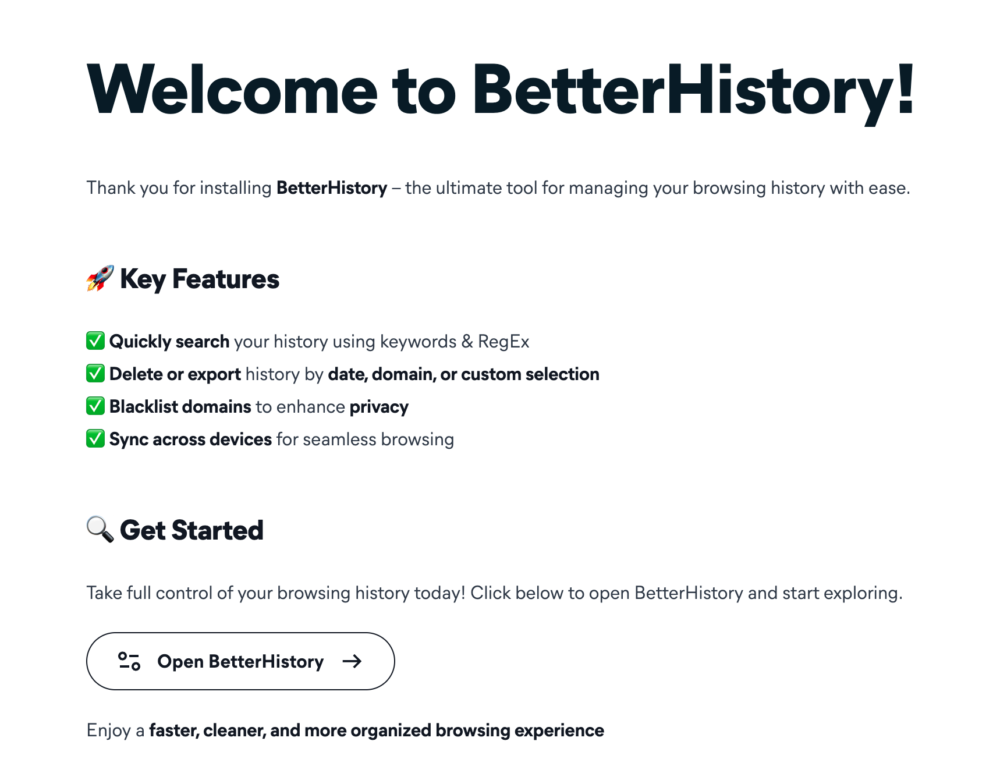
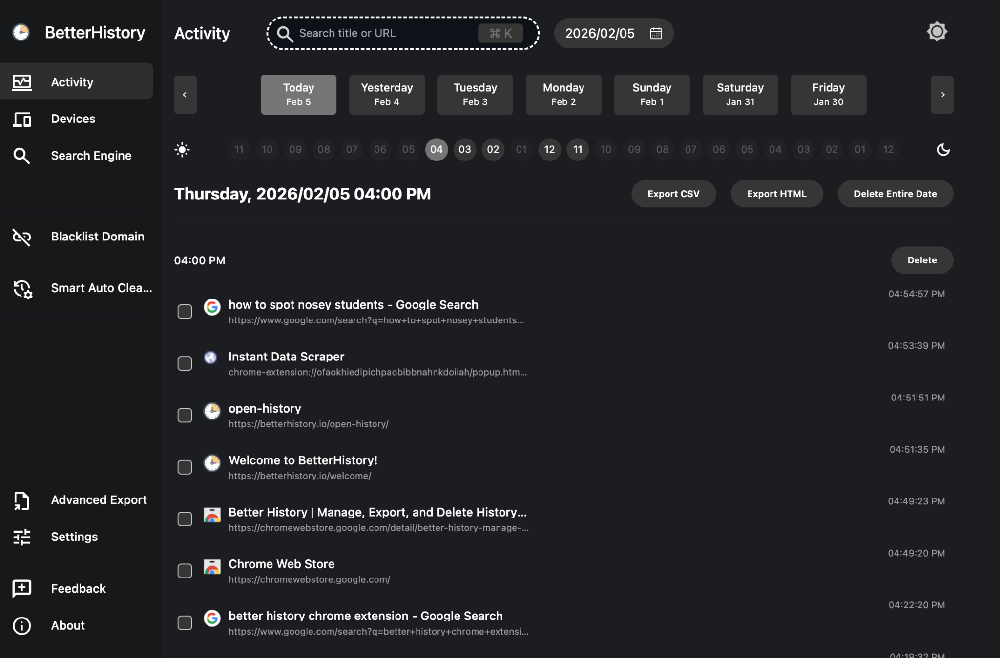
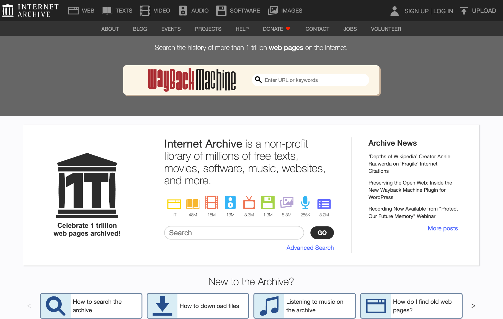
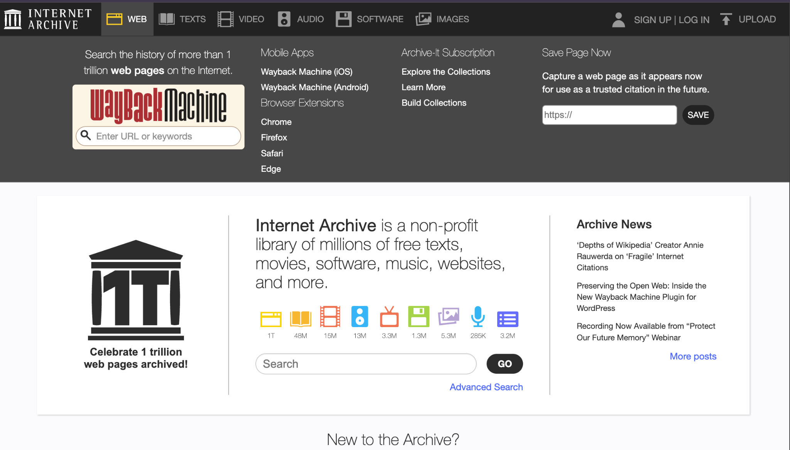
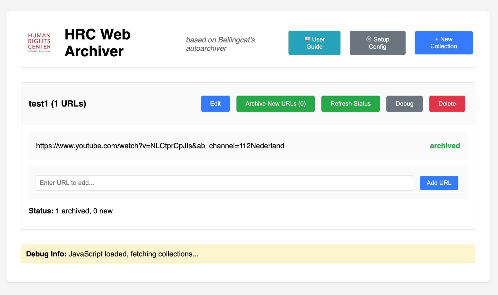

Worksheet · Preserve · February 2026
Archiving Basics
Pre-requisites
Goals:
Exploring some archiving options to preserve digital content that may disappear
Introduction
This has definitely happened to you at least once: in the process of browsing the web, you come across something of interest and you think “I should bookmark this so I can access it later”. A few months go by, and when you return, the content is gone. Digital data is ephemeral, a little bit by nature, a little bit by nurture. Sometimes files get corrupted, accidentally deleted, or their owners decide that their photo/video was too cringe and they pull it down from Instagram. Other times, data does not survive updates to platform’s terms and conditions, and content that was totally ok one day becomes susceptible to deletion the next (see Gif 1, below). In the most egregious cases, governments that are slightly unhappy with how people are using the data they produce may decide to delete it or hide it deep in their bureaucratic networks, only accessible after making sense of dozens of circular links and nestled repositories. Only thanks to committed activists or random chronically online people does crucial data manages to survive the whims of tech overlords or moody politicians.
A visualization of the Great YouTube Purge in 2019 that removed “fringe” content, most of which does not exist anymore. Credits: Oilab.nl
The only solution against the ephemerality of digital data is to carefully and methodically archive content that is relevant for your investigation. Keep in mind that this also refers to the research trail you build while galavanting online: being able to trace back your steps to understand how you got to important data points is as important as the data themselves.
In the following paragraphs, we explore some strategies to archive digital data, ranging from the most basic, to some python wrangling.
For some cool examples of how web archiving can support journalistic investigations specifically, you should have a look at this awesome write up: https://blog.archive.org/2026/02/02/follow-the-changes/
The very basic
Your browser history keeps track of all your digital journeys. When it comes to digital investigations, a good history can be the difference between being able to provide evidence of the robustness of your findings or not. Unfortunately, the base browser history functionality of most modern browsers is not good enough to serve the purposes of backtracking your investigative steps. Therefore, we strongly suggest that you install Better History.
Click on the image below to go to the chrome web store. Make sure that you’re using your research browser, not connected to your personal accounts. Then click on the “Add to Chrome” button.
You will then be presented with the screen below (or something similar if the extension has been updated since we made this work sheet).

Click on the “Open BetterHistory” button at the bottom of the welcome screen.
You will get a screen that looks something like the image below. From here, you will be able to explore the sites that you have visited since you installed the extension. What’s cool about better history is not only its much better design, but also its ability to use regular expressions to search across your browser history. This may not sound handy when your browser history is small, but as you develop multiple projects, you’ll notice its utility.

.Archiving via a third party
2.1 The Internet Archive
If your goal is to preserve a specific version of a website that otherwise is unlikely to disappear (e.g. the list of available datasets in a governmental website today), you can rely on third party services to keep a snapshot of the content for you. The most well known alternative is the Internet Archive. This is what the landing page looked like in February 2026:

If you click on “WEB”, at the top left corner, you’ll be presented with a menu that allows you to submit a url for preservation (see the “Save Page Now” section in the top right. You can also just follow this link.

You don’t need to be signed on to save a page, but a few extra options are available when you are. For example, downloading a WACZ file, which contains the snapshot you’re interested in preserving, or adding the snapshot to your collection, which can be handy to organize your investigative archive if you have multiple investigations going on. Note that the Internet Archive also has a chrome extension which makes this process a bit faster. You can download it here.
While the Internet Archive is an absolutely awesome project and we should be extremely grateful for its existence (and maybe donate to it, if you can afford it), it has a lot of difficulties archiving complex webpages. Given that the organization does not have unlimited resources, videos and images often get lost and any dynamically generated content will most likely not make it to the archive. That’s the downside. If you’re interested in preserving any of this, you’ll be better off using a local method (see the next section).
Apart from the Internet Archive, there are many other services that offer similar functionality. Why you would prefer these over the Way Back Machine is entirely a matter of personal preference, since some of them offer extra features. Some services, however, have triggered a bit of controversy (archive.today), so you may want to steer clear of them if your investigation requires a high level of security (but in that case you should probably do a local archive). These are a few examples:
archive.is (or archive.today and many other domains.
Of course, Wikipedia keeps a list of archiving services you may want to check out if you’re curious.
Archiving with browser extensions
Sometimes you need more control over what gets archived, or you're dealing with content that won't make it to the Internet Archive's servers intact. Browser extensions can help in those situations. Here are three options:
Archive Page adds a button to your toolbar that sends the current URL to archive.today and opens the result in a new tab. You can also right-click on any link to archive or search for it directly. It's simple, uses HTTPS, and doesn't collect data unless you're actively archiving something.
ArchiveToday Automator strips tracking parameters from URLs before sending them to archive.today, which solves the annoying problem where archive.today claims a page doesn't exist just because of some ?kj345d nonsense at the end of the URL. Click the button and it redirects you to the most recent archived version (or lets you create one). Particularly handy if you're working with links from social media or email newsletters.
SingleFile and Save Page WE save the entire webpage as a single HTML file on your computer, with all the images, CSS, fonts, everything. You can view it offline and it most of the time looks exactly like the original, although dynamically loaded content (e.g. tweets) can be lost as you scroll up or down.. You can save multiple tabs at once, set up auto-save, and even upload archives to Google Drive or GitHub. If you need high-fidelity local copies and don't want to rely on third-party services, this is your best bet.
Guillen uses Save Page WE. It’s just one button that you click on your extensions tool bar and automatically downloads the file.
Archiving videos
Command line archiving with yt-dlp
Browser extensions are great for webpages, but they struggle with video content. When you need to archive videos from YouTube, TikTok, Instagram, or pretty much any video hosting platform, yt-dlp is your best option. It's a command-line tool, which means no pretty interface, but it's incredibly powerful and works on over 1,700 websites.
Installation
The easiest way to get yt-dlp installed depends on your operating system:
Windows: Use Chocolatey package manager. Open PowerShell as administrator and run:
choco install yt-dlp ffmpeg
Mac: Use Homebrew. Open Terminal and run:
brew install yt-dlp ffmpeg
Linux: Most distributions can install directly:
sudo apt install yt-dlp ffmpeg
Note that you need both yt-dlp and ffmpeg. The latter handles video/audio conversion and merging.
Basic usage
The simplest command downloads the best available quality:
yt-dlp "https://www.youtube.com/watch?v=VIDEO_ID"
If you want to see what formats are available before downloading:
yt-dlp -F "VIDEO_URL"
This lists all available video and audio streams. You can then download specific formats:
yt-dlp -f 137+140 "VIDEO_URL"
For investigations, you'll probably want to grab metadata along with the video. This command downloads the video, thumbnail, and description:
yt-dlp --write-thumbnail --write-description "VIDEO_URL"
Downloading from TikTok
TikTok works out of the box. Just paste the URL:
yt-dlp "https://www.tiktok.com/@username/video/1234567890"
You can even point yt-dlp at an entire user profile and it'll download all their videos:
yt-dlp "https://www.tiktok.com/@username"
Downloading from Instagram
Instagram is trickier. Most content (reels, stories, age-restricted posts) requires authentication. If you try without it, you'll get errors about login being required. You need to pass cookies from your browser.
The easiest method is to let yt-dlp grab cookies directly from Chrome:
yt-dlp --cookies-from-browser chrome "INSTAGRAM_URL"
Important: On Windows, Chrome must be completely closed for this to work. If you get a "Permission denied" error, close all Chrome windows and try again.
If you prefer Firefox:
yt-dlp --cookies-from-browser firefox "INSTAGRAM_URL"
A word of warning about Instagram: The platform actively fights automated tools. The extractor breaks regularly when Instagram changes things, and there's a risk that using yt-dlp could get your Instagram account flagged or banned. If you're planning to archive a lot of Instagram content for an investigation, consider using one of the forensic tools mentioned earlier—they're built to handle these platform restrictions more robustly.
Downloading playlists
yt-dlp handles entire playlists or channels without breaking a sweat:
yt-dlp "https://www.youtube.com/playlist?list=PLAYLIST_ID"
If you're archiving a channel that's being updated regularly, use the archive feature to track what you've already downloaded:
yt-dlp --download-archive archive.txt "CHANNEL_URL"
This creates a text file that records every video ID you've downloaded. Next time you run the same command, it'll skip videos that are already in the archive.
Audio extraction
Sometimes you only need the audio (podcasts, interviews, etc.):
yt-dlp -x --audio-format mp3 "VIDEO_URL"
Limitations
yt-dlp is fantastic for what it does, but it's not forensically robust. It doesn't automatically hash files or provide chain of custody features. If you need that level of documentation, jump ahead to the forensic tools section. For most investigative work, though, yt-dlp combined with good file organization will serve you well.
The tool is actively maintained and updates frequently to keep up with platform changes. If something breaks, update yt-dlp with yt-dlp -U and try again.
Where are my downloads?
That’s a great question! If you’re on a mac, the easiest is to create a new folder somewhere in your investigation main folder, and then right click on it and select “New Terminal at Folder” and run the commands from above there. All your files will be downloaded to that folder.
On Windows, you can do the same thing: create a folder for your investigation, then shift+right-click inside that folder and select "Open PowerShell window here" (or "Open in Terminal" on Windows 11). Run your yt-dlp commands from there and everything downloads to that folder. On Linux, navigate to your folder in Terminal using cd /path/to/your/folder before running yt-dlp commands.
Forensic tools
When investigations are high stakes and you need forensically robust archiving practices, there’s no way around using a dedicated tool. Your options here are Hunchly, Ubikron and ForensicOSINT. They are all, unfortunately, paid, although they offer free trials. Hunchly’s lasts for one month while Ubikron and ForensicOSINT limit what you can archive, which is rather annoying. In contrast to the other solutions outlined till now, they won’t have trouble dealing with video or dynamically loaded content.
Hunchly has been for many years the industry standard and if you’re part of the Investigations Lab we may be able to offer you an account while your investigation runs within the lab. It’s a robust tool, so a full explanation of its features would be beyond the scope of this worksheet. You can, however, watch this video. The tool is structured around “cases”, and it saves everything that you see in your browser while you browse and the software is set to capture. All the files archived are automatically hashed, which helps with chain of custody (to prove that nothing has been modified after capture). For these reasons, cases get quite big very quickly so you need to be ready to sacrifice a chunk of your hard drive to this hungry archiver.
Ubikron is similar to Hunchly in that it is structured around cases and saves all the content as you browse and the tool is set to capture, but it includes a few other interesting features that set it apart. For example, it automatically generates a network graph to show you how people, places and even custom concepts decided by you are connected throughout your investigation, which can lead to unexpected discoveries. However, the tool is more and more a case management system and less an archival tool. The more recent versions also include an AI assistant that, by default, sends data to Ubikron’s servers. This can be avoided, but needs to be manually checked.
ForensicOSINT sits halfway between Hunchly, Ubikron and one of the free single file chrome extensions shared in the previous section. It combines a Case Management System with page capture and archiving. Since it focuses on a law enforcement audience, its archiving features are advertised as court-ready. I have not tested it, but others seem quite happy with it. The trial version is, unfortunately, not robust enough (no court-readiness, so to say…).
The HRC Auto Archiver (and its Bellingcat big brother)
Being the awesome investigators that they are, Bellingcat has developed a handy tool to automatically archive content during an investigation. Its most interesting feature is that it facilitates team collaboration by coordinating the archiving process through a Google Spreadsheet, where team members can just input the urls of the material they want to archive, and the tool will run archiving sessions autonomously or on command. Its main downside is that it’s a bit difficult to install and operate, since it doesn’t have a graphical user interface and requires you to struggle with the Google Cloud console to create the necessary credentials so the tool can talk to Google Sheets. If you’re brave enough (or desperate enough for archival collaboration), you can find instructions on how to install and operate the tool here.
If you don’t need collaborative features and would like a graphical user interface for your archiving, you can use a modified version of the Bellingcat Auto Archiver that we have very originally named HRC Auto Archiver. You can find the instructions on how to install it here. Archiving from Instagram, Twitter and YouTube is still a bit complicated since it requires you to import your “cookies”, but it works reasonably well.

Note: Using your personal credentials to archive content puts your account at risk of being banned. Always use your research account or sock puppet. If that’s not possible, try to archive in small batches and spread them throughout the day.
Naming files
Regardless of whether you’re working alone or with a team, a consistent system for naming your files is part of the investigative infrastructure. Things will feel manageable until you’re a few months into an investigation with 800 files called screenshot321.png, final_reportv3(really-final).docx, importantEvidence3.pdf. The goal of a consistent naming system is predictability: when you or a colleague opens your archive folder, the filename alone should tell you what’s inside, when it was captured, where it fits in your investigation, and whether you’re allowed to share the information inside.
The standard structure in the Investigations Lab is as follows:
team acronym file description Actors and/or Scope_CLASSIFICATION
Team acronym: A short identifier for your working group. DTD for Digital Threats and Disinformation, DVC for Digital Verification Corps, and so on.
File description: What the document actually is. Be specific enough to distinguish it from other files, but keep it concise. Use Investigation Plan rather than plan, Weekly Meeting Notes rather than notes.
Actors and/or Scope: If actors and spatial considerations are relevant for your investigation, you may want to add them as extra elements to the file naming system. For example: TCR Transfer Agreement Honduras_INTERNAL.pdf
Classification: Either INTERNAL or EXTERNAL. Internal files stay within your team. External files can be shared with partners, subjects, or made public.
Coordinating collective archiving
Few things are more exciting than coordinating a collective research and archiving process through a well structured and carefully crafted spreadsheet. The Investigations Lab (and other labs), have explored multiple project management tools throughout the years, hoping a better mechanism appears for collaboratively storing links to digital content and its descriptions. The mighty Google Spreadsheets remain undefeated so we keep just going back to them, despite good arguments against trusting big tech with our research.
The spreadsheet fulfills two purposes: keeping track of the material collected and making it unambiguous who archived it (and when/why/whether it can be shared). While each project may require specific fields, here are some columns that are almost required:
ID: (this one is actually required). A unique identifier for every item collected. The simplest system is a sequential number prefixed by your team acronym and the year: TCR-2026-001, TCR-2026-002, and so on. The best practice is not to ever delete any item, even if at some point it is judged irrelevant (to avoid messing with the registry). If something becomes redundant, you can add another column (e.g. “Status”) to indicate that.
Added by: The name or initials of the person who entered the row. If you return to an item later and it turns out the URL is dead, you increase the chances of being able to recover the content.
Date added: The date the row was created (which may be different from the date the content was published). Since investigations are often international, a good practice is to use the ISO format YYY-MM-DD, to avoid the US-Rest of the world confusion.
Original URL: The raw, unmodified URL of the digital object that you want to collect. Do not shorten it. If your investigation needs to fit high evidentiary thresholds, you should even keep the parts of the URL that are “unnecessary”. For example, trackers or snippets that show what is the referral site (e.g. source=chatgpt.com).
Content type: Or category. Agree on a short list with the rest of your team and stick to it. Something like webpage, video, image, document, etc., or whatever components are relevant to your investigation. Ideally, you also keep a dictionary in which these categories are defined.
Description: One or two sentences explaining what the item is. Try to make it useful and informative. For example, don’t write down “Very important!!!”. Instead, something like “Video of police checkpoint in Tegucigalpa, posted by local journalist. Relevant to TCR transfer timeline”.
Status: This is another controlled vocabulary just as Content type. Something like pending, archived-online, archived-local, verified, unverified, etc. This column helps you distribute work and organize efforts.
Notes: A free-form column for anything that doesn’t fit elsewhere.
Local filename: If your team is (as you should) also archiving the content, you should include the filename with the location pointing at the shared drive in which the preserved content lives.
IMPORTANT: The spreadsheet is not the archive! Logging items in them does not equal archiving them!
The bottom line
If you’re afraid that content that is relevant for your investigation may disappear, it makes sense to double your efforts. Submit it for preservation to the Wayback Machine AND download it to your computer.
Web archiving is a discipline in its own, and this short guide is only showing you the tip of the iceberg. If it turns out that you’re passionate about preservation, you may find this resource interesting for a thorough, almost academic discussion. This other resource is a huge collection of archiving tools and methods.